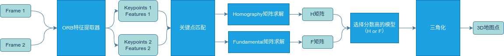
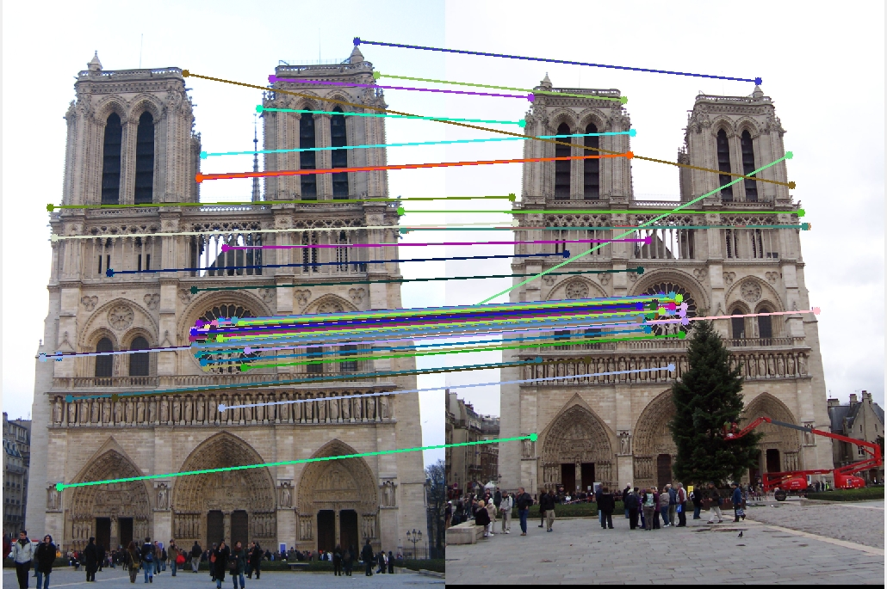
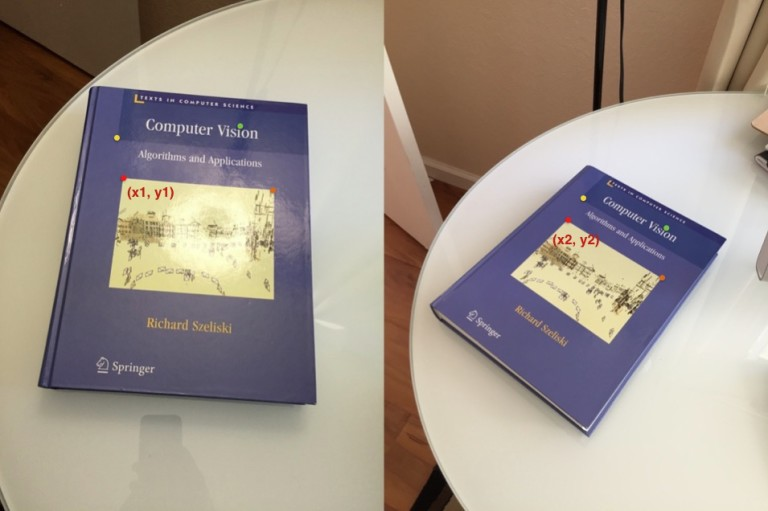
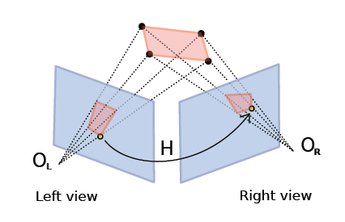
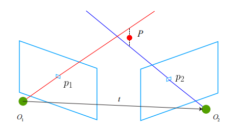
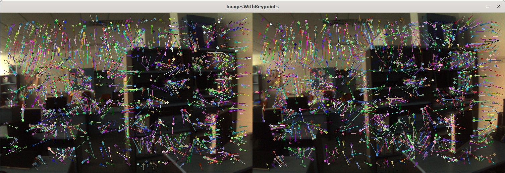
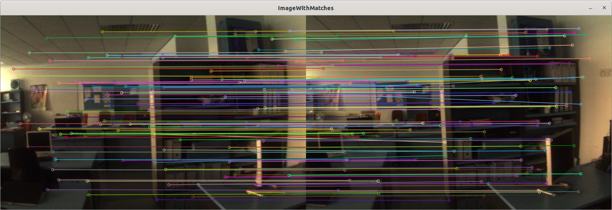
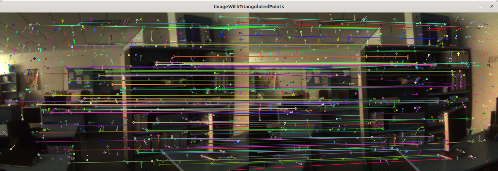
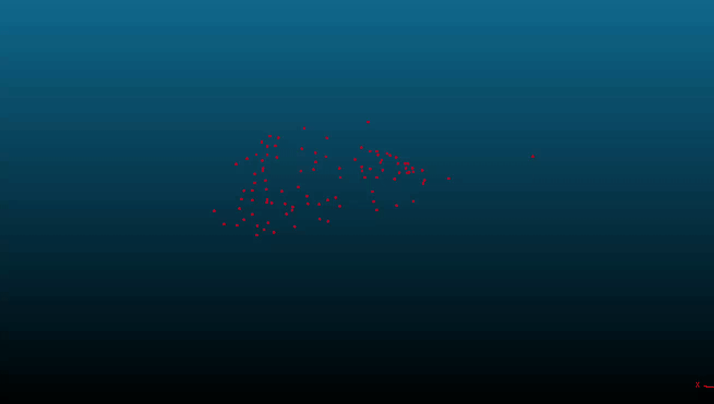

ORB-SLAM3保姆级教程——详解地图初始化（基础矩阵/单应矩阵/三角化的实际应用）
目的
通过阅读本文，你至少可以收获如下内容：
- 对极几何、对极约束以及基础矩阵（Fundamental）/本质矩阵（Essential）的数学原理，并且明白为何视觉SLAM中需要对极几何
- 单应矩阵（Homography）的基础概念，以及单应矩阵与基础矩阵的区别
- 如何通过匹配点对求解基础矩阵和单应矩阵
- 如何通过基础矩阵和单应矩阵求解相机的位姿
- 三角化的基础概念和应用
- ORBSLAM中的地图初始化详细流程
- 一个精简的剥离了复杂的ORB_SLAM3框架的地图初始化代码，并进行详细的中文注释。同时，提供可直接运行的demo。
本文代码：https://github.com/zeal-up/ORB_SLAM_Tracking
一、视觉SLAM中的地图初始化
在视觉SLAM中，地图初始化是一个非常重要的步骤，它决定了后续的跟踪、建图等模块的效果。简单来说，初始化的目的是利用前几帧图像，计算出相机位姿，并且构建出第一批3D地图点
第一批3D地图点为跟踪、建图等模块提供了一个初始的地图，这样后续的模块就可以利用这些地图点进行跟踪、建图等工作。
由于ORB_SLAM系列工作将传感器模式扩展到了：单目、双目、RGBD、IMU+单目、IMU+双目、IMU+RGBD等多种模式，所以地图初始化的方式也有所不同。
双目由于已知两个相机的内外参，可以直接三角化出3D点。三角化是单目的一个步骤，所以双目初始化比较简单。RGBD可以直接通过深度值还原3D坐标，更加简单。 配置了IMU之后实际也可以直接两个相机之间的姿态，也可以直接三角化出3D点（虽然IMU初始化需要考虑IMU参数的初始化，但是这部分内容不在本文的讨论范围内）。
因此，本文将重点放在单目初始化上。单目初始化由于涉及到对极几何和三角化和矩阵求解等知识，对于初学者会比较复杂。
二、ORB_SLAM地图初始化流程

本文将对这流程中的每一个步骤进行详细的讲解，并且给出代码实现。
三、ORB特征提取及匹配
特征点提取是一个比较独立的内容，对于ORB特征提取可以参考这篇文章：https://zeal-up.github.io/2023/05/18/orbslam/orbslam3-ORBextractor/
特征点匹配也是传统视觉领域一个独立的内容，与本篇文章比较独立。在这里我们可以这样理解，对于第一帧图像\(F_1\)和第二帧图像\(F_2\)，经过特征提取后得到关键点和对应的描述子，通过描述子之间计算距离，可以对\(F_1\)中的每一个关键点在\(F_2\)中找到距离最近的关键点。
四、对极几何及对极约束
4.1从实际问题出发
为什么视觉SLAM需要对极几何？
现在，我们通过特征提取和特征匹配，得到了两个图像\(F_1\)和\(F_2\)的一些匹配点对关系
\[ \begin{split} PP &= \{(\textbf{p}_1^i, \textbf{p}_2^i)\} \quad i = [1,2,3,...,N]\\ &\textbf{p}_1^i \in \textbf{F}_1\\ &\textbf{p}_2^i \in \textbf{F}_2\\ \end{split} \]
比如下面这样：

那么，我们现在的问题是，如何从这些点对的匹配关系，得到相机之间的相对位姿？
PS：通常，我们会将第一帧图像当作参考帧，也就是世界坐标系。第二帧相机的位姿也就是相对于第一帧相机的位姿。
4.2 对极几何
我们先把一个点对拿出来单独观察。这个点对（\(\textbf{p}_1,\textbf{p}_2\)）对应着三维空间中一个点\(P\)，可以画出下面的示意图

由相机的成像原理我们可以很直观地想象：从两个相机的光心分别射出一条光线并分别经过\(\textbf{p}_1\)和\(\textbf{p}_2\)，这两条光线会相交于空间中一个点\(P\)
我们先对一些基础名词进行解释：
- 极平面（Epipolar plane）：由两个相机光心与空间中点\(P\)组成的平面\(O_1O_2P\)
- 基线：两个相机光心的连线\(O_1O_2\)
- 极点（Epipoles）：两个相机光心的连线\(O_1O2\)于两个像平面的交点\(e_1,e_2\)
- 极线（Epipolar line）：极平面于像平面的交点，也就是图中的线\(l_1=p_1e_1\),\(l_2=p_2e_2\)
所谓的对极几何，就是指物体与两个相机之间空间几何关系。我们可以利用这个几何关系来求解相机之间的相对位姿。
4.3 对极约束
其实我们的目标就是找出一些像素点对\((\textbf{p}_1^i,\textbf{p}_2^i)\)是怎么被两个相机的相对位姿\(T_{21}=[R_{21},t_{21}]\)联系起来的，然后求解方程就可以得到相机之间的位姿。而三维点\(P\)只是一个中间代理。为了方便，我们先假设\(P_1=[X,Y,Z]\)在相机1的坐标系下，则，根据相机的投影模型，有
\[ s_1\textbf{p}_1=KP_1,\quad s_2\textbf{p}_2=K(R_{21}P_1+t_{21})\tag{1} \]
再使用齐次坐标式，上面的公式中\(s_1\textbf{p}_1\)与\(\textbf{p}_1\)在尺度意义下相等，可以记为
\[ s_1\textbf{p}_1 \simeq\textbf{p}_1\tag{2} \]
我们另外记\(P\)点在两个相机下的归一化平面坐标为\(\textbf{x}_1, \textbf{x}_2\)（归一化平面即\(Z=1\)）
\(\textbf{x}_1, \textbf{x}_2\)与对应的原始点相差一个比例系数，即
\[ \begin{split} \lambda_1\textbf{x}_1 &= P_1\\ \lambda_2\textbf{x}_2 &= P_2\\ \end{split} \]
根据\(P_1,P_2\)的关系$P_2 = R_{21}P_1 + t_{21} $，可以得到
\[ \lambda_2\textbf{x}_2 = \lambda_1R_{21}\textbf{x}_1+\textbf{t}_{21}\tag{3} \]
对于比例系数来说，具体数值我们是无法确定的，因此，上式可以整理成
\[ \textbf{x}_2 = \alpha R_{21}\textbf{x}_1+\beta \textbf{t}_{21}\tag{4} \]
公式（4）两边同时与向量\(\textbf{t}_{21}\)做外积（也就是叉乘），等价于同时左乘\(\textbf{t}^{\wedge}\)（忽略下标）
\[ \textbf{t}^{\wedge}\textbf{x}_2 = \alpha \textbf{t}^{\wedge}R\textbf{x}_1 \tag{5} \]
上式等号左右再左乘\(\textbf{x}_2^T\)
\[ \textbf{x}_2^T\textbf{t}^{\wedge}\textbf{x}_2 = \alpha\textbf{x}_2^T \textbf{t}^{\wedge}R\textbf{x}_1 \tag{6} \]
由于向量\(\textbf{t}^{\wedge}\textbf{x}_2\)垂直于\(\textbf{t}\)和\(\textbf{x}_2\)，因此，公式（6）的左侧严格为0。因此系数\(\alpha\)可以消掉并简单记为
\[ \textbf{x}_2^T \textbf{t}^{\wedge}R\textbf{x}_1 = 0 \tag{7} \]
归一化平面坐标\(\textbf{x}_1,\textbf{x}_2\)可以由像素坐标左乘内参的逆得到，即
\[ \begin{split} \textbf{x}_1 &= K^{-1}\textbf{p}_1\\ \textbf{x}_2 &= K^{-1}\textbf{p}_2\\ \end{split}\tag{8} \]
将公式（8）代入公式（7）可以得到
\[ \textbf{p}_2^TK^{-T}\textbf{t}^{\wedge}RK^{-1}\textbf{p}_1=0\tag{9} \]
4.4 基础矩阵（Fundamental Matrix）F与本质矩阵（Essential Matrix）E
公式（7）和公式（9）都可以叫做对极约束。公式（7）忽略了相机内参的影响，因为一般在SLAM中相机内参是已知的，而归一化平面坐标可以方便地由相机内参和像素坐标得到，因此公式（7）是公式（9）的简化形式。
为了简便，我们可以记公式（9）中间部分为两个矩阵
\[ \begin{split} E &= \textbf{t}^{\wedge}R \\ F &= K^{-T}EK^{-1} \end{split}\tag{10} \]
其中\(E\)称为本质矩阵（Essiential Matrix），\(F\)称为基础矩阵（Fundamental Matrix）
基于\(E,F\)的定义，对极约束，即公式（7）（9）又可以记为
\[ \begin{split} \textbf{p}_2^T F \textbf{p}_1 &= 0\\ \textbf{x}_2^T E \textbf{x}_1 &= 0 \end{split}\tag{11} \]
要注意的是，由于上式中等式右边是0,因此左右两边同时乘以一个系数等式依旧成立，这一点我们在后面会再次提到
4.5 对极约束的几何意义
对极约束，即公式（11）实际上表达的是\(O_1PO_2\)共面
更为易懂的说法是，图像\(I_2\)中的点\(p_2\)，通过对极约束，可以用F或者E矩阵投影到\(I_1\)中的极线（\(p_1e_1\)）上
以公式\(\textbf{p}_2^TF\textbf{p}_1=0\)为例，我们可以先将\(\textbf{p}_2^{T}F\)其展开为
\[ \begin{split} \begin{bmatrix}{} u_2&v_2&1 \end{bmatrix} \begin{bmatrix}{} f_{11}&f_{12}&f_{13}\\ f_{21}&f_{22}&f_{23}\\ f_{31}&f_{32}&f_{33} \end{bmatrix} = \ \begin{bmatrix} a&b&c \end{bmatrix} \end{split} \]
\(a,b,c\)可以看成是直线方程的三个参数，所有满足公式\(au + bv + c=0\)的点都在这条直线上，这条直线也就是极线。
因此，当我们要衡量\(F\)矩阵的好坏的时候，可以通过计算\(\textbf{p}_1\)到这条直线的距离，也就是
\[ d = \frac{au_1+bv_1+c}{\sqrt{a^2+b^2}} \]
同理，如果要计算\(\textbf{p}_1\)到\(I_2\)的极线，然后计算\(\textbf{p}_2\)到投影极线的距离，过程跟上面的基本一致，先计算\(F\textbf{p}_1\)得到\(a,b,c\)，然后再计算\(u_2,v_2,1\)到直线的距离。或者直接将公式\(\textbf{p}_2^TF\textbf{p}_1=0\)求一个转置，变成\(\textbf{p}_1^TF^T\textbf{p}_2=0\)，然后再计算距离。
4.6 本质矩阵与基础矩阵的求解
4.6.1 基础矩阵的求解推导
本质矩阵是一个3x3矩阵，但其是由旋转与平移组成（6自由度），并且，要注意到公式（11）可以对任意尺度成立，也就是说本质矩阵可以放缩任意一个尺度，因此，本质矩阵有5个自由度。 因此，从理论上最少可以由5对点对求解（注意这里与PnP算法的不同，PnP算法等号两边没有0,一个点对可以建立两个等式，因此一个点对可以约束2个自由度。而这里一个点对只能建立一条等式，也就是约束一个自由度，因此需要5个点对）
但是一般我们会用8个点对求解，也就是八点法。将8对点代入方程（11）的第二条等式，并将本质矩阵展开为一维向量，则可以建立线性方程组 （点对的归一化平面坐标：\(\textbf{x}_1^T = [u_1, v_1, 1]\)， \(\textbf{x}_2^T=[u_2,v_2,1]\)）
\[ \begin{split} \begin{bmatrix}{} u_2&v_2&1 \end{bmatrix} = \ \begin{bmatrix}{} e_1&e_2&e_3\\ e_4&e_5&e_6\\ e_7&e_8&e_9 \end{bmatrix} \begin{bmatrix}{} u_1\\v_1\\1 \end{bmatrix} \end{split}\tag{12} \]
展开后可以得到如下形式

以上方程求解后就可以得到本质矩阵（对任意尺度成立）
4.6.2 使用OpenCV求解
OpenCV有Api可以直接通过匹配点对计算基础矩阵
1 |
|
具体说明可以参考Api说明：findFundamentalMat()
五、单目尺度不确定性
这是一个很重要的知识点：对于单目SLAM,我们并不能估计平移的具体尺度，我们只能够以第一帧和第二帧的移动距离当作单位(\(t=1\))，后续以这个单位进行跟踪和建图，我们实际上不能得出轨迹具体移动了多少米，地图点具体有几米远。这就是所谓的尺度不确定性。
5.1 如何理解单目尺度不确定性
让我们再次回到对极几何的图
对于上面这幅图，虽然我们知道两个相机光心与像素点的连线最终会相交与空间中的一个点，但是我们如果把\(O_1PO_2\)以任意比例放缩，上面的关系仍然成立，因此我们没有办法通过\(p_1p_2\)的匹配关系得出\(O_1O_2\)具体有多少米。
单目不确定性也可以通过公式体现体现出来。
在对极约束的公式（11）中：
\[ \begin{split} \textbf{p}_2^T F \textbf{p}_1 &= 0\\ \textbf{x}_2^T E \textbf{x}_1 &= 0 \end{split}\tag{11} \]
等式左边可以乘上一个任意的系数而不改变结果
因为在公式（10）中我们知道\(E\)的定义是这样的：
\[ \begin{split} E &= \textbf{t}^{\wedge}R \\ F &= K^{-T}EK^{-1} \end{split}\tag{10} \]
也就是说，因为我们可以在公式（11）中对\(E,F\)乘以一个任意系数，因此我们也可以在公式（10）中对平移量\(t\)乘以一个系数，因此我们没法得出\(t\)的具体长度
六、单应矩阵（Homography Matrix）
我们前面讨论基础矩阵的概念以及如何从一些匹配点对关系中求解基础矩阵。我们没有对关键点是否在一个平面上进行任何假设。但是，如果我们假设关键点在一个平面上，那么我们就可以使用单应矩阵（Homography Matrix）来求解相机之间的位姿。

当匹配点对的关键点都是在3D空间中一个平面上时，这些点对关系可以通过单应矩阵来描述（相差一个常量系数）

令\([u,v,1]^T\)为图片1的像素齐次坐标，\([u^{\prime},v^{\prime},1]^T\)为匹配点在图片2的像素齐次坐标，则上面那句话可以等价为如下关系：
\[ \lambda \begin{bmatrix} u^{\prime}\\ v^{\prime}\\ 1 \end{bmatrix}= \boldsymbol{H} \begin{bmatrix} u\\ v\\ 1 \end{bmatrix}= \begin{bmatrix} h_{00} & h_{10} & h_{20}\\ h_{01} & h_{11} & h_{21}\\ h_{02} & h_{12} & h_{22} \end{bmatrix} \begin{bmatrix} u\\ v\\ 1 \end{bmatrix}\tag{13} \]
公式（13）中的系数\(\lambda\)用来将变换后的坐标归一化（将第三个维度的值放缩为1） 同时要注意，单应矩阵虽然有9个元素，但是可以除以\(h_{22}\)进行归一化，因此自由度只有8
6.1 单应矩阵与相机内外参的关系
单应矩阵除了用来恢复位姿\(R,t\)之外，还可以用来做图像拼接。在自动驾驶中BEV的合成也需要单应矩阵。关于单应矩阵与相机内外参关系的详细推导可以看这篇博客：https://zeal-up.github.io/2023/06/08/cv/surround-view-projection/
这里只给出结论，单应矩阵与相机的内外参关系如下：
\[ H_{21} = R_{21}-\frac{\boldsymbol{t}_{21}\boldsymbol{n}^T}{d}\tag{14} \]
6.2 单应矩阵的求解
6.2.1 单应矩阵的求解推导
从公式（13）我们可以知道，一个匹配点对可以建立两个等式（\(u,v\)各一条），同时单应矩阵的最后一个元素\(h_{22}\)可以设置为1,因此单应矩阵的自由度为8.于是，我们最少可以用4对匹配点对求解单应矩阵。
当大于4对匹配点对时，我们可以使用最小二乘法求解：
\[ J = \sum_{i}\left(u_i^{\prime}-\frac{h_{00}u_i+h_{01}v_i+h_{02}}{h_{20}u_i+h_{21}v_i+h_{22}}\right)^2+\left(v_i^{\prime}-\frac{h_{10}u_i+h_{11}v_i+h_{21}}{h_{20}u_i+h_{21}v_i+h_{22}}\right)^2 \]
6.2.2 使用OpenCV求解
OpenCV提供接口可以直接求解单应矩阵
1 | Mat cv::findHomography( |
详细的使用可以参考Api说明： cv::findHomography()
如果对内部实现有兴趣，可以参考这篇文章博客：对OpenCV::findHomography的源码解读
七、从H、E矩阵恢复R、t
7.1 基础要点
F矩阵与E矩阵只相差相机内参，通常我们会将F矩阵转换为E矩阵，然后再恢复R、t。
从H、E矩阵求解R、t涉及到比较复杂的数学推导，对于CV从业人员我认为这部分可以忽略具体推导过程，但是要抓住几个要点：
- 无论是从H、E恢复位姿\(R,t\)都会得出多种不同的解
- 从E矩阵恢复\(R,t\)可以得到4种解
- 从H矩阵恢复\(R,t\)可以得到8种解
- 需要用一些判断方式从这些解中选择出正确的解
7.2 从E矩阵恢复R、t
求解推导过程忽略，我们只需要知道根据E可以分解出两对R,t如下

另外，由于\(-E\)和\(E\)等价，因此对\(t\)取负号也可以，于是有4种\(R,t\)的组合，分别对应下面图中的其中一种相机情况

7.3 使用OpenCV从E中求解R,t
OpenCV提供了一个api可以直接从E矩阵中分解出R、t
1 | void cv::decomposeEssentialMat( |
Api给出两个\(R\)和一个\(t\)，我们可以构造四种可能的解：[R1,t], [R1,−t], [R2,t], [R2,−t]
详细使用参考API说明： cv::decomposeEssentialMat
7.4 从H矩阵恢复R、t
从H矩阵恢复R、t有多种方法，论文中的方法叫Faugeras SVD-based decomposition，最终可以求解出8种解。另外一种有名的数值解法（通过奇异值分解）叫Zhang SVD-based decomposition
OpenCV的接口使用的是分析解法：https://inria.hal.science/inria-00174036v3/document OpenCV的接口最终返回4种解
OpenCV的接口使用说明：cv::decomposeHomographyMat
八、如何选择正确的R、t
无论从E矩阵还是H矩阵中恢复出R、t，都会得到多种解。我们需要从这些解中选择出正确的解。 最简单的做法是利用分解出的R、t对匹配点进行三角化，并检查该3D点在两个相机下的深度值，3D点必须在两个相机下都是正的才是正确的解。
对于单应矩阵的分解结果，OpenCV提供了一个函数可以帮助我们选择正确的解：cv::filterHomographyDecompByVisibleRefpoints
在ORB_SLAM中，对于每一种解，都会对所有匹配点进行三角化，对三角化出来的点，会进行很多步骤的检查，最后选择拥有最多内点的解作为正确的解。
九、三角化
9.1 三角化的基础概念和推导
当我们求出了两个相机之间的位姿\(T_{21}=[R_{21},t_{21}]\)之后，我们就可以利用这个位姿，联合匹配点对关系，求解出三维点的坐标。

三角化的求解实际上就是构造方程，然后求解方程。构造方程的方式有多种，这里介绍在ORB_SLAM中的实现方式
以空间中一个3D点\(X=[x,y,z]\)为例，该点通过相机外参\(T_1=[R_1|t_1]\)和\(T_2=[R_2|t_2]\)转换到相机坐标系。该点在图像1和图像2的归一化平面坐标分别为\(\textbf{x}_1=[u_1,v_1,1]^T\)和\(\textbf{x}_2=[u_2,v_2,1]^T\)。（注意，这里的归一化平面坐标是使用相机内参进行反投影\(\textbf{x} = K^{-1}p\)后得到的坐标），对于任意一个相机，我们都可以得到如下的等式：
\[ \lambda \textbf{x} = TX\tag{15} \]
上式等号左右两边同时乘以\(\textbf{x}\)的反对称矩阵\(\textbf{x}^{\hat{}}\)（PS:一个向量乘以一个向量的反对称矩阵相当于向量叉乘，因此向量乘以自己的反对称矩阵相当于向量叉乘自己，结果为0），我们可以得到：
\[ \begin{split} \textbf{x}^{\hat{}}TX &= 0\\ \rightarrow \begin{bmatrix} 0&-1&v\\ 1&0&-u\\ -v&u&0 \end{bmatrix} \begin{bmatrix} \textbf{r}_1\\ \textbf{r}_2\\ \textbf{r}_3 \end{bmatrix} & = 0\\ \rightarrow \begin{bmatrix} v\textbf{r}_3-\textbf{r}_2\\ \textbf{r}_1-u\textbf{r}_3\\ -v\textbf{r}_1+u\textbf{r}_2\\ \end{bmatrix}X & = 0\\ \end{split}\tag{16} \]
\(\textbf{r}_1,\textbf{r}_2, \textbf{r}_3\)是\(T\)的第一、二、三行。
上式中，第三行\(-v\textbf{r}_2+u\textbf{r}_3\)可以通过第一行和第二行线性组合得到（第一行乘以\(-u\)，第二行乘以\(-v\)，然后相加），因此可以忽略第三行，只用前两行构造方程。
我们有两个相机，因此一共可以构造出四条方程：
\[ \begin{split} \begin{bmatrix} v_1\textbf{r}_3^{1}-\textbf{r}_2^1\\ \textbf{r}_1^1-u_1\textbf{r}_3^1\\ v_2\textbf{r}_3^{2}-\textbf{r}_2^2\\ \textbf{r}_1^2-u_2\textbf{r}_3^2\\ \end{bmatrix}X & = 0 \end{split} \]
9.2 三角化的求解实现
可以用SVD求解上述方程，求解出的3D坐标有4个元素，需要将第四个元素归一化为1。这里把ORB_SLAM的这部分代码也贴出来
1 | /** |
9.3 使用OpenCV进行三角化
OpenCV也提供接口进行三角化，且可以批量操作：cv::triangulatePoints
十、ORB_SLAM中的初始化
ORB_SLAM中对于初始化部分的操作虽然基础原理离不开上面的内容，但是具体实现上有很多细节，不仅仅反应作者的深厚算法功底，也反映了作者的工程能力。我们这里介绍ORB_SLAM中初始化部分的一些特殊操作
10.1 自动选择Homography或者Fundamental模型进行初始化
在ORB_SLAM中，初始化阶段在特征提取和特征点匹配完成后，会开辟两个线程同时计算H矩阵和F矩阵，根据得分选择更好的模型进行\(R,t\)分解并初始化。
计算H矩阵和F矩阵的时候采用的是RANSAC算法，默认进行200个迭代，每次迭代随机选择8对匹配点对，然后根据这8对匹配点对计算H或者F矩阵，然后分别计算分数。这里的分数计算会计算双边投影误差。也就是，根据8对匹配点对，求出\(F_1\)到\(F_2\)的F/H矩阵，同时将该矩阵取逆，得到\(F_2\)到\(F_1\)的F/H矩阵，然后将两个矩阵分别作用在所有匹配点对上，计算双边投影误差，最后将两个误差相加，作为该模型的分数。
H矩阵的投影误差计算 由于H矩阵可以将\(p_1\)投影到\(p_2^{\prime}\)，因此从投影误差可以直接计算\(p_2\)到\(p_2^{\prime}\)的距离。
F矩阵的投影误差计算 F矩阵可以将\(p_1\)投影到图像2的极线上，因此投影误差计算的是\(p_2\)到极线的距离。具体计算方式如下：
\[ d = \frac{au_2+bv_2+c}{\sqrt{a^2+b^2}} \]
其中
\[ \begin{split} \begin{bmatrix}{} f_{11}&f_{12}&f_{13}\\ f_{21}&f_{22}&f_{23}\\ f_{31}&f_{32}&f_{33} \end{bmatrix} \begin{bmatrix}{} u_1\\v_1\\1 \end{bmatrix} = \ \begin{bmatrix} a&b&c \end{bmatrix} \end{split} \]
10.2 从H、F矩阵恢复R、t
选择了H或者F模型之后，会对H/F进行分解得到R、t。对于每一种[R,t]组合，会对所有匹配点对进行三角化，然后对三角化出来的3D点进行检查，去除以下情况的点：
- 深度为负（需满足在两个相机下都是正的）
- 重投影误差大于某个阈值（默认为2个像素）
同时，对每个点会统计其到两个相机光心的夹角，最后对所有夹角进行从小到大排序，选择第50个夹角，如果这个夹角小于1度，会认为初始化失败。
10.3 只在特征金字塔的最底层进行特征点匹配
在ORB_SLAM中，初始化阶段特征点匹配是在特征金字塔的最底层进行的。这一点也可以理解。图像金字塔主要是用来解决移动造成的尺度变化，而在初始化阶段，两帧图像不会有大的尺度变化，因此只需要在最底层进行匹配即可。
附录A：在复现过程中的一些问题
PS：本文提供详细注释的精简代码，并附有demo：https://github.com/zeal-up/ORB_SLAM_Tracking
A-1 H矩阵的分数一直比F模型的分数低
在实验的过程中发现，H矩阵的分数一直比F模型的分数低，初始化时一直是选择的F模型进行初始化。后来发现ORBSLAM3中有一个bug,在使用H模型重建时并没有对3D点赋值，所以H模型其实可能一直没有被用上。https://github.com/UZ-SLAMLab/ORB_SLAM3/pull/806
A-2 与OpenCV求解H/F矩阵的对比
笔者在使用ORB_SLAM提供的代码进行初始化的时候很容易失败，而且每次运行的结果可能都不太相同。后来尝试使用OpenCV的接口求解H/F矩阵，发现每次运行的结果都比较一致，而且很少失败。OpenCV在求解H/F矩阵时也是用的RANSAC方法，区别比较大的应该是分数的计算。ORB_SLAM中计算分数的时候是计算双边投影误差，而OpenCV中计算分数的时候是计算内点个数。这两种方法的区别可能导致了ORB_SLAM中的实现对随机数非常敏感，每次运行的结果都不一样。
同时，使用ORB_SLAM的实现找出来的H/F矩阵，很容易在后续的三角化阶段被拒绝。而使用OpenCV接口求解的H/F矩阵，很少被拒绝。
另外，使用OpenCV的接口计算H、F矩阵，速度要比ORB_SLAM中的实现快很多，一个原因可能还是双边投影误差的计算需要两次投影。
附录B：Demo结果
PS：本文提供详细注释的精简代码，并附有demo：https://github.com/zeal-up/ORB_SLAM_Tracking
B.1 特征提取结果
同时可视化特征点的角度方向

B.2 特征点匹配

B.3 成功三角化的特征点

B.4 三角化的点
